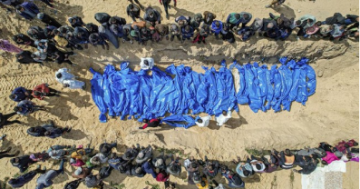
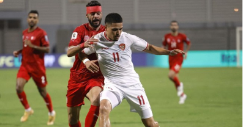
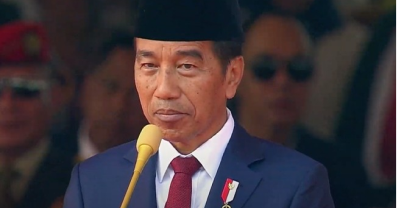

Korban Tewas Serangan Israel di Gaza Tembus 42.126 Orang
Kementerian Kesehatan mengatakan 42.126 orang tewas dalam perang antara Israel dengan militan Palestina, Hamas di Jalur Gaza, per Jumat (11/10).

Ranking FIFA Indonesia Usai 'Dirampok' Wasit, Posisi Bahrain Nyungsep
Timnas Indonesia mendapatkan tambahan hingga 4,39 poin dalam ranking FIFA setelah ditahan imbang 2-2 secara kontroversial oleh Bahrain pada Kualifikasi Piala Dunia 2026.

Jokowi Naikkan Tunjangan PNS Kementerian ESDM 10 Hari Jelang Lengser
Presiden Joko Widodo (Jokowi) merestui kenaikan tunjangan kinerja (tukin) PNS Kementerian Energi dan Sumber Daya Mineral (ESDM).